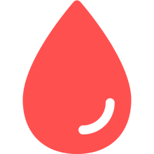

献血者数の予測
(全国 | {{update}}更新)
2017年から2024年までの献血者数の推移を学習した予測モデルが、3か月先までの献血者数を予測し、適切なタイミングでの献血をサポートします。
地図をクリックすると、「都道府ごとのデータ」がご覧いただけます。
昨年比5%以上増加の予測
昨年比わずかに増加の予測
昨年比わずかに減少の予測
昨年比5%以上減少の予測
現在の献血状況
(全国 | {{update}}更新)
日本赤十字社が公開している現在の献血状況をまとめ、都道府県ごとに正確な献血状況を把握することができます。
地図をクリックすると、「都道府ごとのデータ」がご覧いただけます。
安心です
心配です
困っています
非常に困ってます
数字で見る献血
(全国 | {{update}}更新 | ※2017年1月から集計)
これまで献血に協力していただいた人数
0人
これまでに献血された血液の総量

0kL
献血ルームの総数

0箇所